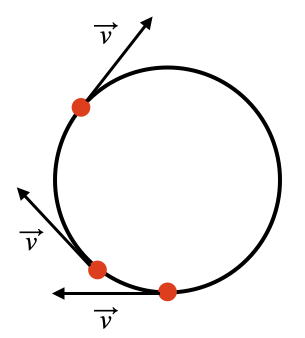

B7.1 Rotational Kinematics - Basic Relationships#
B7.1.1 Motivation#
When dealing with rotational dynamics, we need to be able to address the problems and solutions in terms of rotational parameters such as angle, rotational speed, and rotational acceleration. In this module, we will see how we can define these concepts and how they relate.
B7.1.2 Arc Lenght vs. Straigh Line Segment#
Consider a fixed point on a circle and let the circle roll without slipping. The are length is then the same as the straight line segment shown in the illustration below.
From geometry, we have a relationship between the arc length, radius and angle spanned by the two contact points:
We have a relationship between a straight-line segment and a angular segment.
The fixed point moved through the straigh line segment \(\Delta s\) and the angular segment \(\Delta\theta\) in an elapsed time \(\Delta t\). We can then find the average speed:
What is the meaning of this speed in terms of the rotational motion? Let us consider the instantaneous velocity at a few points as shown in the Figure below:
The velocity vector is always in the instantaneous direction of motion and we observe that it is tangential to the circle. We refer to this as the tangential velocity or in our case, the tangential speed. We will insert a subscript to emphasize this.
Inserting Equation (1) into this equation gives us
We define the average angular (or rotational) speed as
and the instantaneous angular velocity as
These definitions imply that we have a relationship between tangential and rotational speeds:
Similarly, we can define the average angular (or rotational) acceleration as
and the instantaneous angular acceleration as
Similarly, we have a relationship between tangential and rotational accelerations:
IMPORTANT: in the equations above, the angular (or rotational) parameters must be in units of radians, radians/s, and radians/s\(^2\), respectively.
Example 1
A flywheel is spinning at a rate of 34 rad/s before it is accelerated to a rate of 72 rad/s over an elapsed time of 0.40 s. What was the average angular acceleration of the flywheel during this elapsed time?
Solution
Plug in our numbers:
Example 2
A disk is rotating at a rate of 45 rad/s. How many revolutions does it rotate in 2.0 s?
Solution
We are looking for the angular distance:
We need the answer in revolutions and not radians, so we need to convert:
Hence, our answer is